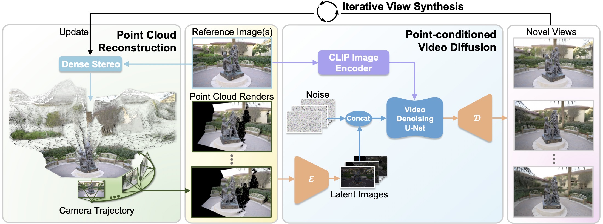

Given a single reference image or sparse image sets, we first build its point cloud representation using a dense stereo model, which enables accurately moving cameras for free-view rendering. Subsequently, to address the large missing regions, geometric distortions, and point cloud artifacts exhibited in the point cloud render results, we train a point-conditioned video diffusion model to serve as an enhanced renderer, facilitating the generation of high-fidelity and consistent novel views based on the coarse point cloud renders. To achieve long-range novel view synthesis, we adopt an iterative view synthesis strategy that involves iteratively moving cameras, generating novel views, and updating the point cloud, which enables a more complete point cloud reconstruction and benefits downstream tasks such as 3D-GS optimization.

To facilitate more consistent 3D-GS optimization, we leverage the iterative view synthesis strategy to progressively complete the initial point cloud and synthesize novel views using ViewCrafter. We then use the completed dense point cloud to initialize 3D-GS and employ the synthesized novel views to supervise 3D-GS training.